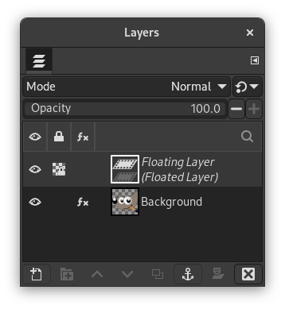

|

|
 |
| Chapter 4. What to do if you are stuck |

|
2.2. The selection is hidden |
Figure 4.1. Layers dialog showing a floating selection.

Showing a floating selection that can be anchored ( Ctrl+H) or turned into a new layer ( Shift+Ctrl+N).
How to tell: If there is a floating selection, many actions are impossible until the floating section is anchored. To check, look at the Layers Dialog, shortcut Ctrl+L (making sure it's set to the image you're working on) and see whether the top layer is called “Floating Selection”.
How to solve: Right click on the floating selection to open the Layer menu and select either (shortcut Ctrl+H) to anchor the floating selection to the layer below it, or convert it into an ordinary layer by selecting (shortcut Shift+Ctrl+N). If you need more help on how to do this, see Floating Selections.